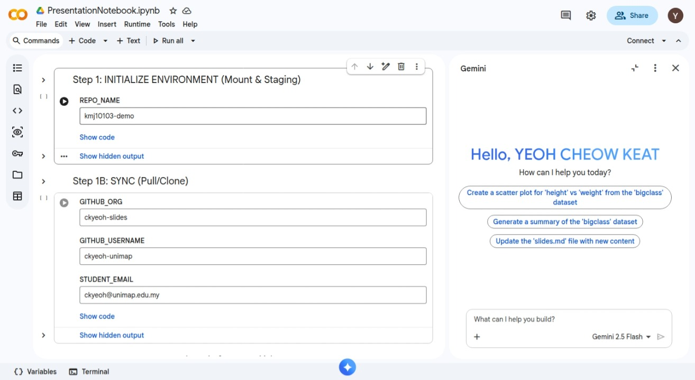

Music: “Adrift” by Scott Buckley (CC BY 4.0)
Key Concepts: - Energy conservation per (1). - \Delta U = Q - W

The fundamental relation of thermodynamics:
\Delta U = Q - W
The work done W is positive when the system expands against an external pressure.
Interactive Model: